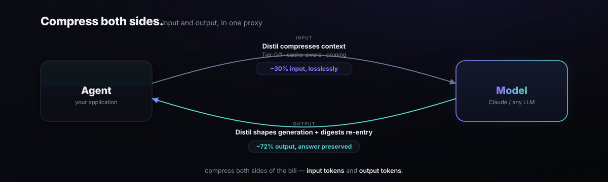

Output & I/O
Most compressors only touch the input side. Distil compresses both sides: input context going in, and generation verbosity coming back — plus a lossless re-entry digest that keeps long outputs from re-billing as full history. This page covers all three, plus real-trace ingestion and the performance benchmark.

Input and output, together
Input compression has always been Distil's core: cache-aware pruning certified to change 0% of live agent decisions at 83.2% token savings. Output compression closes the other half of the invoice:
Context compression
Cache-aware pruning + lossless transforms. Certified 83.2% token savings at 0% live decision-change (≤5% @ 95% confidence, claude-opus-4-8). Always on. See Benchmark.
Generation shaping
A gated role:"system" directive shapes verbosity before generation. A/B measured: −72.5% output tokens (95% CI 67.5–77.1%), answer preserved 100%. Lossy, opt-in, PAYG-only.
Output compression
Module: distil/output.py
Two mechanisms work together, with different fidelity guarantees:
Generation-side shaping (--shape-output)
Before forwarding the request, the proxy injects a role:"system" directive instructing the model to be concise. Two modes:
light— trims preamble and padding. Typical reduction: 20–35%.aggressive— strong brevity constraint; omits elaboration and hedging. Measured reduction: 72.5% (95% CI 67.5–77.1%), answer preserved 100% in A/B.
--lossless-only: shaping runs when --shape-output is set and --lossless-only is not. There is no subscription key detection or key-tier verification in the proxy.
# Start the proxy with aggressive output shaping $ distil proxy --port 8788 --shape-output aggressive distil proxy listening on http://127.0.0.1:8788 → upstream: https://api.anthropic.com → output shaping: aggressive
Lossless re-entry digest
When a long model response is about to be re-injected as history on the next turn, Distil compresses it using the same Tier-1 digest mechanism used for input blocks: the full output is stored in the local RestoreStore under an 8-hex handle, and only the handle travels as history. The model never re-reads the full prior output.
This is fully lossless and transparent to the application. The digest expands back to the original on any path that reads history — certify, replay, or export.
Measuring output savings
$ distil output-savings --input shaped_pairs.jsonl output-token A/B — n=8 turns baseline mean output tokens: 487 shaped mean output tokens: 134 reduction: 72.5% [95% CI: 67.5%–77.1%] (illustrative) answer preserved: 100% (semantic match gate, n=8)
distil output-savings reads a JSONL file of {"baseline": ..., "shaped": ...} pairs (default: bundled fixture); pass --input <file> to measure your own traffic. Always verify output savings with a live run against your own workload, since verbosity shaping interacts with prompt design.
Real-trace ingestion
Module: distil/ingest.py · Command: distil ingest
Distil ships a bundled synthetic corpus, but your production traffic may differ. distil ingest converts recorded API request logs into a Distil corpus so you can measure savings on real traffic.
Supported formats
Pass --provider anthropic (default) or --provider openai to select the input format. One input file produces one trajectory — there is no session grouping.
- anthropic (default) — JSONL where each record is an Anthropic
messages.createrequest body. - openai — JSONL where each record is an OpenAI
chat.completions.createrequest body.
$ distil ingest --input prod.jsonl --out ./mycorpus
ingesting prod.jsonl → ./mycorpus
corpus written to ./mycorpus/
Benchmarking real traces
Real-trace corpora have no DECISION labels, so the offline non-inferiority gate cannot run. Use --savings-only to measure input-token savings; certify quality with a live runner:
# Savings gate on real traces (no DECISION labels required) $ distil bench --corpus ./mycorpus --savings-only corpus gate — 42 trajectories | savings-only (no DECISION labels) aggregate savings: 28.3% [95% CI: 25.1%–31.6%] note: certify with --runner anthropic for a live quality gate. # Live quality gate on a single trajectory from your corpus $ distil certify --trajectory ./mycorpus/session_abc123.json --runner anthropic certifying strategy 'distil' on 'session_abc123' (runner=anthropic) ... VERDICT: PASS (certified non-inferior)
Performance benchmark
Module: distil/perf.py · Command: distil perf
Distil is designed to add negligible latency to the critical path. The performance benchmark measures raw compression throughput and per-request overhead of the in-process adapter.
$ distil perf distil performance benchmark compressor throughput: ~27,000 distil-compressions/sec in-process adapter p50: 0.006 ms in-process adapter p95: 0.011 ms in-process adapter p99: 0.018 ms (measured on Apple M-series, CPython 3.12, bundled sre-disk-incident trajectory)
At 0.006 ms p50, the in-process adapter adds under 1% to a typical LLM round-trip (which runs in seconds). The live head-to-head benchmark confirms 0.026 ms per turn — ~1,000× faster than LLMLingua-2's ~1,480 ms and ~1,000× faster than Headroom's ~26 ms. The proxy path adds a small network hop; the compression cost is identical either way.
sre-disk-incident trajectory (4 turns, ~8,000 tokens) is compressed in a tight loop with no warm-up exclusion. The throughput reflects realistic multi-turn context, not a trivial microbenchmark. Run distil perf on your hardware for a machine-specific baseline.
Quick reference
| Command / Flag | What it does |
|---|---|
distil output-savings | Measure realized output-token reduction via live A/B |
proxy --shape-output light|aggressive | Enable generation-side verbosity shaping (PAYG-only, lossy) |
distil ingest --input <file> --out <dir> | Convert production API logs into a Distil corpus |
bench --corpus <dir> --savings-only | Savings gate on a real-trace corpus (no labels required) |
distil perf | Throughput and latency benchmark |